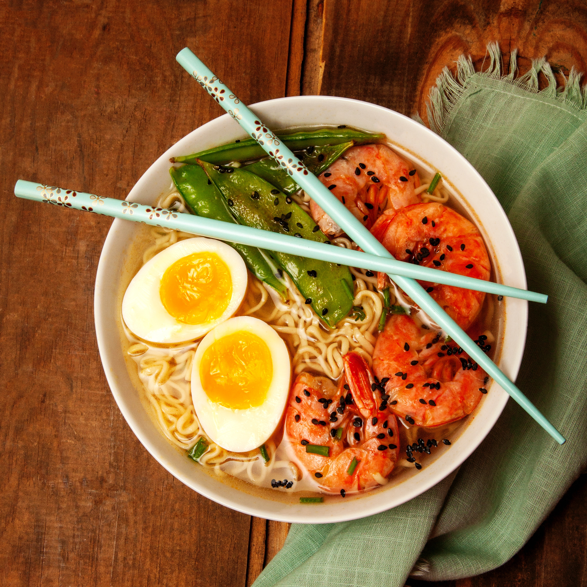

Ramen
Ingredients Required and Instructions

Ingredients
- 4 cups chicken or vegetable broth
- 4 oz. dried ramen noodles
- 1/2 cup sliced shiitake mushrooms
- 1/2 cup sliced green onions
- 2 cloves garlic, minced
- 2 tsp. grated fresh ginger
- 2 tbsp. soy sauce
- 1 tbsp. miso paste
- 1 cup shredded cooked chicken or sliced tofu (optional)
- 1 soft-boiled egg, peeled and sliced in half (optional)
Instructions
- In a large pot, bring the chicken or vegetable broth to a boil.
- Add the dried ramen noodles and cook for 3-4 minutes, or until tender.
- While the noodles are cooking, add the sliced shiitake mushrooms, green onions, minced garlic, and grated ginger to the pot.
- In a small bowl, whisk together the soy sauce and miso paste until smooth. Add this mixture to the pot and stir to combine.
- If desired, add shredded cooked chicken or sliced tofu to the pot and stir to heat through.
- Divide the cooked noodles and broth between 2-3 bowls.
- Top each bowl with a soft-boiled egg, if desired.
Tips
- Feel free to add additional vegetables or proteins to the ramen, such as sliced carrots, bok choy, or shrimp.
- Customize the flavor of the broth by adding additional seasonings, such as chili flakes or sesame oil.
- To achieve a perfectly soft-boiled egg, bring a pot of water to a boil and carefully add the eggs. Boil for 7 minutes, then immediately transfer to a bowl of ice water to stop the cooking process. Peel and slice the eggs just before serving.
- Be careful not to overcook the ramen noodles, as they can become mushy. Check the package instructions for the recommended cooking time.
- If you prefer a thicker broth, you can add a cornstarch slurry (cornstarch mixed with water) to the pot and stir until the broth thickens slightly.
Thanks for visiting us
Click here to go back to Home Page